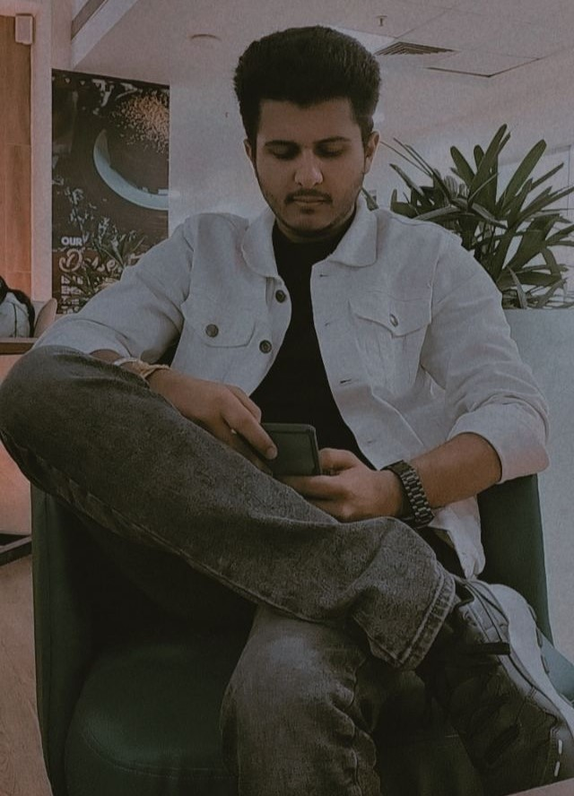

About me
Greetings! I'm Naman Vij, a Computer Science enthusiast at Seth Jai Parkash Mukand Lal Institute of Technology.
Embarking on a journey where algorithms meet ambition, I find joy in the intricate dance of
code. From crafting seamless algorithms to building innovative solutions, I revel in the world
of programming.
My educational voyage began at St. Thomas School, shaping my early years with a foundation of
curiosity and enthusiasm. Later, at Sacred Heart Convent Sr. Sec School in Jagadhri, I continued
to nurture my academic prowess.
Beyond the digital realms, you'll find me immersed in the excitement of cricket matches,
savoring the strategic brilliance and sportsmanship. Family is my anchor, and my free time is a
treasure I spend cherishing moments with them. Occasionally, I add a dash of laughter to life by
hanging out with friends, embracing the lighter side of every moment.
In essence, I am not just a coder; I am a fun-loving individual on a quest to balance the
complexities of technology with the simplicity of joy. Join me as I navigate the exciting
intersections of code, camaraderie, and creativity!
Skills
HTML: CSS: Javascript: Node.js: MySql:
